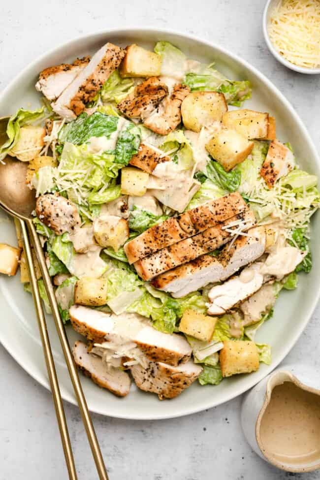

High Protein Chicken Caesar Salad
A lovely Chicken Caesar Salad with a fresh and light vibe.
Ingredients
- 250g Raw Chicken Breast
- 250g Cos Lettuce
- 1 Slice of Bread
- Salt
- Pepper
- Garlic Powder
- 250g Low Fat Greek Yoghurt
- 10g Minced Garlic
- 2 Tbsp Lemon Juice
- 30g Freshly Grated Parmesan Cheese
- 1 Tbsp Worcestershire Sauce
- 1 Tbsp Olive Oil
Steps
- Cut chicken breast in half & tenderising it to slightly flatten it, this will help cook quicker and evenly.
- Season each piece of chicken on each side with salt, pepper & garlic powder.
- Set the chicken to the side for now & grab 1 slice of bread.
- To make the croutons cut the bread into small cubes using scissors or a knife & bake it in the air fryer at 200C for 5-7 minutes or until golden brown & crispy.
- In a blender cup add 250g of low fat greek yoghurt, 10g of minced garlic, 2 Tbsp of lemon juice, 30g of freshly grated parmesan cheese, 1 Tbsp of Worcestershire sauce, 1 Tbsp of olive oil then add a dash of salt & pepper.
- Blend the sauce for 5-10 seconds.
- Cook chicken using a pan on high heat for 4-5 minutes on each side [if using a non stick pan you will not need any oil or spray, if using a regular pan add a bit of light cooking oil spray]
- Cut chicken into thin slices. In a bowl add 250g of cut up cos lettuce followed by the croutons and 2 Tbsp of the caesar dressing.